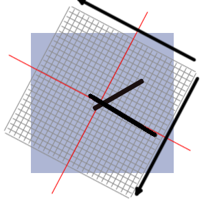

So far, we've worked out that the best way to draw a clock is to make the canvas element behave like a clock, with the origin at the centre around which the context rotates.
As long as the context has been rotated by the right amount, we just need to draw a straight line along one axis for our hands. Let me explain that in a bit more detail. If we go back to our unrotated context:
and draw a line along the vertical axis, it's like it's pointing at 12 on our clock:

If we rotate the context by 60 degrees (which is 60/360 of a full circle and therefore 2* pi * 60 / 360 radians), we have a hand pointing at 2 on our clock:
Let's put that together in code, considering the minute hand first. We need to work out the angle that the minute hand subtends from the vertical at any given moment. It's quite easy to work out as long as we know the time. At X minutes past the hour, the minute hand is 360 * X/60 degrees round. But as we need to be working in radians, it's 2 * pi * X / 60.
So after we've translated the canvas origin to the center, we rotate it by the appropriate angle and draw the line.
In order to get the value of the current minute, use the Date() function with getMinutes().
var d = new Date();
var mins = d.getMinutes();
c.rotate((mins / 60) * (2 * Math.PI));
where 'c' is the 2d context of our canvas element.
On a real clock, the minute hand doesn't just jump forward every minute, it gradually moves with every second. So, for extra accuracy and a realistic movement, we should really account for the number of seconds through the minute in our angle too:
var secs = d.getSeconds();
c.rotate(((mins /60) + (secs / 3600)) * (2 * Math.PI));
There are 60 minutes in an hour and there are 3600 seconds in an hour, so we do the calculation this way to work out the ange that the minute hand needs to rotate to account for both the minutes and the seconds since the hour (0 radians)..
To draw the line, we'll use a few canvas functions. Initially, we need to specify that we're beginning a new drawing operation so we call beginPath thus:
c.beginPath();
beginPath is used at the beginning of any set of drawing instructions on a canvas. It typically begins a drawing event and stroke ends it.
We then moveTo the starting point of our line, which (for now) is the centre of the canvas at (0,0).
c.moveTo(0,0);
and then draw a lineTo the end point. The end point is a negative value on the y-axis, because you'll remember that the positive values go from top to bottom, so if we want to draw a line upwards, we draw it to a negative value on the y-axis.
var minuteHandLength = -0.8 * (document.querySelector('clockcanvas').height / 2);
c.lineTo(0, minuteHandLength);
In this example, I've drawn the minute hand 80% (0.8) of the clock's radius. In our finished code later, you will see that we use a value for the length of the hands that is relative to the size of the clock rather than an absolute number. This allows us to create a look and feel for our clock which is independent of its finished size. We'll look at customising the look and feel of the clock later.
Before we actually draw the line, we need to specify the colour, thickness and style of the line. We can use the following to accomplish this:
c.fillStyle = "#000000";
c.strokeStyle = "#00000";
c.lineCap = "round";
c.lineWidth = 5;
Finally, we actually draw the line using stroke.
c.stroke();
But wait, the hands on a clock usually don't start right in the middle, but have a little overhang. (Interesting fact, on a mechanical clock, this is to provide a counterweight for the longer part of the hand to reduce wear on the mechanism and prolong its life.) To include this, instead of starting the line at 0,0, we start a little bit along the positive direction (down) of the y-axis. So now our code looks like this:
var minOverhang = 0.1;
c.moveTo(0, minOverhang);
Gives us this:
When we put all this together subsequently, the code will look a bit different because rather than declaring dimensions like minOverhang at the time, we will wrap them all up in a parameter that will be sent to a generic function. This will allow a single clock draw function to cater for all the different styles that we choose.
That's our minute hand done, now for the hour hand. We will use a very similar method to draw it, but first, we should rotate the context back to its original position ready for the next operation. Note that when we drew the hour hand, we used the context to put it in the right place, but the line was drawn on the canvas itself, so the line we drew does not rotate back with the context.
c.rotate(((mins / 60) + (secs / 3600)) * (-2 * Math.PI));
To return to this:
To rotate the context by the right amount for the hour hand (catering for both hours since 12 and minutes since the hour):
var hours = d.getHours();
c.rotate(((hours / 12) + (mins / 720)) * (2 * Math.PI));
Then we draw the line. We have already set the fillStyle, strokeStyle etc. we don't need to do it again, but we do need to issue a new beginPath command.
var hourOverhang = 0.2;
var hourHandLength = -0.6 * (document.querySelector('clockcanvas').height / 2);
c.moveTo(0, hourOverhang);
c.lineTo(0, -hourHandLength);
c.stroke();
Now, we have two lines on our canvas representing the current time:

To conclude this section, let's put all the code that we've gone through together. You will notice that I've wrapped it up in a function. This is so that we can use it to expand upon as we go on.
function paintClock(cvs, opt) {
//function that draws a clock on canvas cvs with options opt
var size, d, c, hours, mins, secs; //declare variables
size = cvs.width / 2
d = new Date(); //use the time now to set the clock
mins = d.getMinutes();
hours = d.getHours();
secs = d.getSeconds();
//Hands style
c = cvs.getContext("2d"); //get the context of the canvas to operate with
c.fillStyle = opt.colour; //set the colour and transparency of the hands
c.strokeStyle = opt.colour;
c.lineCap = "round"; //the end of the hands should be round
c.translate(size, size); //set the origin to the centre of the canvas
//Minute Hand
c.beginPath();
c.rotate(((mins / 60) + (secs / 3600)) * 2 * Math.PI); //rotate the canvas to the minute
c.moveTo(0, (opt.minoverh / 100) * size);
c.lineWidth = size * (opt.minwidth / 100); //set the thickness of the hands
c.lineTo(0, (-opt.minlength / 100) * size);
c.stroke(); //draw the minute hand
c.rotate(((mins / 60) + (secs / 3600)) * -2 * Math.PI); //rotate the canvas back to 0
//Hour Hand
c.beginPath();
c.rotate(((hours / 12) + (mins / 720)) * 2 * Math.PI); //rotate the canvas to the hour
c.moveTo(0, (opt.houroverh / 100) * size);
c.lineWidth = size * (opt.hourwidth / 100); //set the thickness of the hands
c.lineTo(0, (-opt.hourlength / 100) * size);
c.stroke(); //draw the hour hand
c.rotate(((hours / 12) + (mins / 720)) * -2 * Math.PI); //rotate the canvas back to 0
}
I hope that makes sense. Of course, to make this work, we need a couple of extra things. Our HTML page must contain a canvas element with an explicit size:
<canvas id='clock' height=300px width=300px></canvas>
and our Javascript must call the paintClock function at the right time with the right parameters. In this example, I've called it when the page has loaded:
document.addEventListener('DOMContentLoaded', function () {
paintClock(document.querySelector("#clock"),
{ colour: "#000000",
hourWidth: 7,
minWidth: 7,
minoverh: 0.1,
minlength: 0.9,
houroverh: 0.2,
hourlength: 0.5 }
)
}
And here is the fruit of our labour. This clock was drawn at page load time, so is probably a few minutes late by now. We'll add functionality to keep time later
We have already made a clock that tells the right time, on the next page we will move on to making it look good.